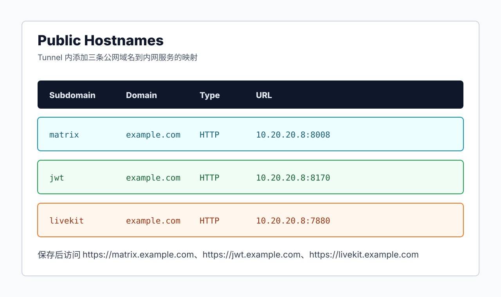

这篇记录一套已经实际跑通的 Matrix Synapse 接入 LiveKit 语音视频方案：公网 HTTPS 入口走 Cloudflare Tunnel，Docker 主机上的 LiveKit server、matrix-livekit-jwt-service、coturn 都使用 network_mode: host，全程不走 Nginx Proxy Manager。
先把限制说在前面：如果主要使用地点在中国大陆，这套方案不一定稳定，尤其不适合把 LiveKit 呼叫控制面长期压在 Cloudflare Tunnel 上。实际现象可能是 coturn 老通话路径正常，但使用 LiveKit / MatrixRTC 呼叫时，Element 点呼叫后白屏、等待 8 秒甚至更久才弹出呼叫界面。这个问题通常不是 coturn relay 端口的问题，而是 LiveKit 相关的 HTTPS / WebSocket / JWT 控制链路经 Tunnel 后延迟和抖动变大。
如果你有稳定公网 80/443，优先看“公网 443 标准部署方案”。如果没有本地标准 443，但能转发自定义 HTTPS 端口并想继续用 NPM，优先看“Cloudflare Worker 与 NPM 部署方案”。本文更适合作为没有公网 443 时的临时方案、验证方案，或者对呼叫启动延迟不敏感的环境。
这不是 Synapse 从零安装篇，而是在已经有 Matrix Synapse 的基础上补齐新版 Element / MatrixRTC 需要的 LiveKit 后端。本文示例里：
Matrix server_name: 666666.xyz
Docker 主机内网 IP: 10.20.20.8
Synapse HTTP: 10.20.20.8:8008
well-known: 10.20.20.8:8899
LiveKit API/WS: 10.20.20.8:7880
JWT service: 10.20.20.8:8170
ntfy: 10.20.20.8:80
coturn: 10.20.20.8:3478实际部署时，把 666666.xyz、10.20.20.8、所有密钥都换成自己的。不要把真实的 LiveKit secret、Cloudflare Tunnel token、Synapse TURN shared secret 写进公开文章或截图里。
本文里的 Compose 写法按当前已经跑通的 Docker 主机配置整理。原机器上有些服务最初是用 创建容器.sh 跑起来的，例如 cloudflared、livekit-server、matrix-livekit-jwt-service；下面统一改写成等价 docker-compose.yaml，后续重启、迁移和排障会清楚很多。
一、整体架构
最终访问路径是这样：
Element 客户端
|
| HTTPS / WebSocket
v
Cloudflare Tunnel
|
| 内网 HTTP 转发
v
Docker 主机 10.20.20.8
|-- 8899 -> matrix-well-known-web
|-- 8008 -> matrix-synapse
|-- 8170 -> matrix-livekit-jwt-service
|-- 7880 -> livekit-server
|-- 80 -> ntfy
LiveKit RTC 媒体端口:
50201-50400/udp
17882/tcp 可选，LiveKit TCP fallback
coturn:
3478/tcp
3478/udp
50000-50200/udpCloudflare Tunnel 负责 HTTP 和 WebSocket，也就是：
/.well-known/matrix/client- Synapse Client API
- LiveKit
7880API / WebSocket - JWT service
8170 - ntfy
80Web UI / API
但是 Tunnel 不能替代普通 UDP 媒体端口。LiveKit 的 50201-50400/udp、coturn 的 3478/udp 和 relay 端口仍然要在路由器、光猫或防火墙上放行/转发到 Docker 主机。
二、Cloudflare Tunnel 路由
先在 Cloudflare Zero Trust 里创建 Tunnel：
Zero Trust -> Networks -> Tunnels -> Create a tunnelConnector 选择 Cloudflared，运行环境选择 Docker，Cloudflare 会生成一条带 token 的命令。推荐整理成 compose 管理。
创建目录：
mkdir -p /root/data/docker_data/cloudflared
cd /root/data/docker_data/cloudflared创建 /root/data/docker_data/cloudflared/docker-compose.yaml：
services:
cloudflared:
image: cloudflare/cloudflared:latest
container_name: cloudflared
restart: unless-stopped
network_mode: host
command:
- tunnel
- --protocol
- http2
- --region
- us
- --no-autoupdate
- run
- --token
- "替换成你的 Cloudflare Tunnel token"启动：
docker compose up -d
docker logs -f cloudflared回到 Cloudflare Tunnel 页面，Connector 状态变成 Healthy 后，添加 Public Hostname。
本文使用一个主域名和几个子域名。当前 Cloudflare Tunnel 的已发布应用程序路由是：
| Hostname | Path | Type | URL |
|---|---|---|---|
666666.xyz |
/.well-known |
HTTP |
10.20.20.8:8899 |
666666.xyz |
* |
HTTP |
10.20.20.8:8008 |
livekit.666666.xyz |
留空或 * |
HTTP |
10.20.20.8:7880 |
matrix-jwt.666666.xyz |
留空或 * |
HTTP |
10.20.20.8:8170 |
sms.666666.xyz |
留空或 * |
HTTP |
10.20.20.8:80 |
顺序很重要。666666.xyz 的 /.well-known 要排在 * 前面，否则 .well-known 请求会被转发到 Synapse，而不是独立的 well-known 容器。
这里的 cloudflared 明确使用了 --protocol http2 --region us，这是当前实际跑通配置。QUIC 在部分家庭网络里可能会抖，HTTP/2 通常更稳。

三、端口和 DNS
推荐这样规划：
| 记录 | 用途 | Cloudflare 状态 |
|---|---|---|
666666.xyz |
Matrix homeserver；Tunnel 转发 /.well-known 和 Synapse 8008 |
Tunnel 自动创建，橙云/CNAME 到 Tunnel |
livekit.666666.xyz |
LiveKit API/WebSocket；Tunnel 转发到 7880 |
Tunnel 自动创建，橙云/CNAME 到 Tunnel |
matrix-jwt.666666.xyz |
matrix-livekit-jwt-service；Tunnel 转发到 8170 |
Tunnel 自动创建，橙云/CNAME 到 Tunnel |
sms.666666.xyz |
ntfy 通知服务；Tunnel 转发到 ntfy 的 80 |
Tunnel 自动创建，橙云/CNAME 到 Tunnel |
coturncoturn7829.666666.xyz |
coturn TURN | DNS only，灰云，直接指向公网 IP |
coturn 的域名可以托管在 Cloudflare DNS，但 coturn 流量不能走 Cloudflare Tunnel，也不能开橙云代理。TURN 是 UDP/TCP 中继服务，必须使用 DNS only，也就是灰云，让客户端直接连到你的公网 IP：
coturncoturn7829.666666.xyz -> 你的公网 IP如果家宽公网 IP 会变化，可以继续用 ddns-go、脚本或 Cloudflare API 更新 Cloudflare 里的这条 DNS only 记录。不要把它配置成 Tunnel Public Hostname，也不要把小云朵打开；否则手机端、外网客户端很容易出现能呼叫但没声音、没画面的问题。
路由器或防火墙至少放行/转发 LiveKit 和 coturn 的 UDP 媒体端口。5 人左右的小规模使用，不需要给 LiveKit 预留过大的 UDP 端口段；这里把 coturn relay 放在 50000-50200/udp，LiveKit RTC 放在 50201-50400/udp，两段连续且不重叠。RouterOS 防火墙或端口转发里可以直接写一条 50000-50400/udp 覆盖这两段。
17882/tcp 是 TCP fallback，当前实测通话走的是 UDP，不转发它也可以正常呼叫；如果希望在部分 UDP 受限网络里多一个兜底，再额外转发它。
LiveKit:
50201-50400/udp 必需
17882/tcp 可选，TCP fallback
coturn:
3478/tcp
3478/udp
50000-50200/udp如果公网 IPv6 不稳定，coturn 域名先只保留 A 记录，避免手机优先走 IPv6 后媒体不通。
四、LiveKit server
创建目录：
mkdir -p /root/data/docker_data/livekit-server/etc
cd /root/data/docker_data/livekit-server生成 LiveKit secret：
openssl rand -base64 32编辑 /root/data/docker_data/livekit-server/etc/livekit.yaml：
port: 7880
bind_addresses:
- ""
rtc:
tcp_port: 17882
port_range_start: 50201
port_range_end: 50400
use_external_ip: true
enable_loopback_candidate: false
stun_servers:
- "stun.miwifi.com:3478"
- "stun.chat.bilibili.com:3478"
keys:
livekit_api_key_example: livekit_secret_example说明：
port: 7880是 LiveKit API 和 WebSocket 入口，Cloudflare Tunnel 转发到这里。50201-50400/udp是 LiveKit RTC UDP 端口段。5 人左右使用时，200 个 UDP 端口已经很宽裕；如果后面用户数明显增加，再扩大这段范围。tcp_port: 17882是 LiveKit RTC TCP fallback 端口。它不是当前通话成功的必需项，不转发也能用；只是在遇到 UDP 被限制的网络时可以作为备用。use_external_ip: true会让 LiveKit 自动探测外网 IP，适合家宽/内网主机端口转发场景。keys里的 key/secret 要和 JWT 服务完全一致。
创建 /root/data/docker_data/livekit-server/docker-compose.yaml：
services:
livekit-server:
image: livekit/livekit-server:latest
container_name: livekit-server-test
restart: unless-stopped
network_mode: host
command: --config /etc/livekit.yaml
volumes:
- ./etc/livekit.yaml:/etc/livekit.yaml:ro启动：
docker compose up -d
docker logs -f livekit-server-test如果日志里能看到监听 7880，并且后面发起呼叫时出现 participant active、mediaTrack published，说明 LiveKit 已经工作。日志里的 connectionType: udp 表示这次通话走的是 UDP 媒体端口，不依赖 17882/tcp。
五、matrix-livekit-jwt-service
JWT 服务负责把 Matrix 用户身份换成 LiveKit token。它也使用 host 网络，监听宿主机 8170。
创建目录：
mkdir -p /root/data/docker_data/matrix-livekit-jwt-service
cd /root/data/docker_data/matrix-livekit-jwt-service创建 /root/data/docker_data/matrix-livekit-jwt-service/docker-compose.yaml：
services:
matrix-livekit-jwt-service:
image: ghcr.io/element-hq/lk-jwt-service:latest
container_name: matrix-livekit-jwt-service
restart: unless-stopped
network_mode: host
extra_hosts:
- "666666.xyz:127.0.0.1"
environment:
LIVEKIT_JWT_BIND: ":8170"
LIVEKIT_URL: "wss://livekit.666666.xyz"
LIVEKIT_KEY: "livekit_api_key_example"
LIVEKIT_SECRET: "livekit_secret_example"
LIVEKIT_FULL_ACCESS_HOMESERVERS: "666666.xyz"
LIVEKIT_INSECURE_SKIP_VERIFY_TLS: "YES_I_KNOW_WHAT_I_AM_DOING"关键点：
LIVEKIT_URL必须是客户端能访问的公网地址，所以这里写wss://livekit.666666.xyz，不是http://127.0.0.1:7880。LIVEKIT_KEY、LIVEKIT_SECRET必须和livekit.yaml一致。LIVEKIT_FULL_ACCESS_HOMESERVERS写 Matrix 用户 ID 的 server_name，例如@black:666666.xyz后面的666666.xyz。extra_hosts只影响这个 JWT 容器，让它校验 homeserver 时走第六节的本机代理，不影响外部客户端和 Cloudflare Tunnel。LIVEKIT_INSECURE_SKIP_VERIFY_TLS是配合本机自签 HTTPS 代理使用的。如果你不用第六节的本机校验加速，而是让 JWT 直接走公网正式证书，可以去掉这一行。
启动：
docker compose up -d
docker logs -f matrix-livekit-jwt-service基础检查：
curl -i http://127.0.0.1:8170/healthz
curl -i https://matrix-jwt.666666.xyz/healthz都返回 200 才继续。
六、JWT 本机校验加速
如果 JWT 服务校验 Matrix OpenID 时走 https://666666.xyz，在 Tunnel 方案里可能会出现这种绕路：
JWT 容器 -> Cloudflare -> Tunnel -> Synapse实际测试这个链路一次可能要 0.8-1.1s，一次呼叫里又可能校验多次，于是 Element 发起呼叫时会白屏等待几秒。
可以加一个只给本机用的 HTTPS 反代，把 JWT 的 homeserver 校验改成本机直连 Synapse。这个容器只监听 127.0.0.1:443，不占公网 443，不影响 Cloudflare Tunnel。
创建目录：
mkdir -p /root/data/docker_data/matrix-local-federation-proxy/conf
mkdir -p /root/data/docker_data/matrix-local-federation-proxy/certs
cd /root/data/docker_data/matrix-local-federation-proxy生成本机自签证书：
openssl req -x509 -nodes -newkey rsa:2048 -days 3650 \
-subj '/CN=666666.xyz' \
-keyout ./certs/local.key \
-out ./certs/local.crt创建 /root/data/docker_data/matrix-local-federation-proxy/conf/default.conf：
server {
listen 127.0.0.1:443 ssl;
server_name 666666.xyz;
ssl_certificate /etc/nginx/certs/local.crt;
ssl_certificate_key /etc/nginx/certs/local.key;
location = /.well-known/matrix/server {
default_type application/json;
return 200 '{"m.server":"666666.xyz:443"}';
}
location /_matrix/federation/ {
proxy_pass http://127.0.0.1:8448;
proxy_set_header Host $host;
proxy_set_header X-Real-IP $remote_addr;
proxy_set_header X-Forwarded-Proto https;
}
}创建 /root/data/docker_data/matrix-local-federation-proxy/docker-compose.yaml：
services:
matrix-local-federation-proxy:
image: nginx:alpine
container_name: matrix-local-federation-proxy
restart: unless-stopped
network_mode: host
volumes:
- ./conf/default.conf:/etc/nginx/conf.d/default.conf:ro
- ./certs:/etc/nginx/certs:ro启动：
docker compose up -d测试本机代理：
curl -k -i --resolve 666666.xyz:443:127.0.0.1 \
'https://666666.xyz/_matrix/federation/v1/openid/userinfo?access_token=test'返回 401 是正常的，因为这里用的是假 token。重点是响应要很快，并且不是连接失败。
如果第五节已经按完整 Compose 写入 extra_hosts 和 LIVEKIT_INSECURE_SKIP_VERIFY_TLS，这里不用再改。最终 JWT Compose 应包含下面这两项：
services:
matrix-livekit-jwt-service:
image: ghcr.io/element-hq/lk-jwt-service:latest
container_name: matrix-livekit-jwt-service
restart: unless-stopped
network_mode: host
extra_hosts:
- "666666.xyz:127.0.0.1"
environment:
LIVEKIT_JWT_BIND: ":8170"
LIVEKIT_URL: "wss://livekit.666666.xyz"
LIVEKIT_KEY: "livekit_api_key_example"
LIVEKIT_SECRET: "livekit_secret_example"
LIVEKIT_FULL_ACCESS_HOMESERVERS: "666666.xyz"
LIVEKIT_INSECURE_SKIP_VERIFY_TLS: "YES_I_KNOW_WHAT_I_AM_DOING"重启 JWT：
cd /root/data/docker_data/matrix-livekit-jwt-service
docker compose up -d这一步不是必须，但很推荐。它能把 JWT 校验用户身份时的内网绕路从“出门走 Cloudflare 再回来”变成“本机直连 Synapse”。
七、Synapse 配置
Synapse 这里假设已经在运行，只补充 LiveKit 需要的配置。
1. docker-compose 端口
编辑 Synapse 的 compose，例如：
nvim /root/data/docker_data/synapse/docker-compose.yml确认 Synapse 至少暴露 8008，并额外给本机 federation 校验开一个只监听 127.0.0.1 的 8448：
services:
synapse:
image: matrixdotorg/synapse:latest
container_name: matrix-synapse
restart: unless-stopped
ports:
- "8008:8008"
- "127.0.0.1:8448:8448"
volumes:
- ./data:/data8008 给 Cloudflare Tunnel 转发客户端请求，127.0.0.1:8448 只给上一节的本机 federation proxy 使用，不暴露到公网。
2. homeserver.yaml listener
编辑：
nvim /root/data/docker_data/synapse/data/homeserver.yaml确认有 8008 listener：
listeners:
- port: 8008
tls: false
type: http
x_forwarded: true
resources:
- names: [client, federation]
compress: false再加一个只给本机代理用的 8448 listener：
- port: 8448
tls: false
type: http
bind_addresses: ["0.0.0.0"]
resources:
- names: [federation]
compress: false虽然这里容器内监听 0.0.0.0:8448，但 compose 只映射到宿主机 127.0.0.1:8448，外网访问不到。
3. MatrixRTC 配置
在 homeserver.yaml 里加入：
experimental_features:
msc4143_enabled: true
matrix_rtc:
transports:
- type: livekit
livekit_service_url: "https://matrix-jwt.666666.xyz"如果原来已经有 experimental_features，不要重复写第二段，把 msc4143_enabled: true 合并进去。
4. coturn 配置保留
旧客户端和部分 NAT 场景仍然需要 coturn。Synapse 里继续保留 TURN 配置：
turn_uris:
- "turn:coturncoturn7829.666666.xyz?transport=udp"
- "turn:coturncoturn7829.666666.xyz?transport=tcp"
turn_shared_secret: "替换成你的 TURN shared secret"
turn_user_lifetime: 86400000
turn_allow_guests: True修改后重启：
cd /root/data/docker_data/synapse
docker compose up -d
docker logs -f matrix-synapse检查本机 federation endpoint：
curl -i http://127.0.0.1:8448/_matrix/federation/v1/version
curl -i 'http://127.0.0.1:8448/_matrix/federation/v1/openid/userinfo?access_token=test'第一个应返回 200，第二个用假 token 返回 401 是正常的。
八、well-known 容器
Cloudflare Tunnel 里 666666.xyz/.well-known 会转发到这个 Nginx 容器。它负责返回 Matrix 客户端发现需要的 JSON。
创建目录：
mkdir -p /root/data/docker_data/matrix-well-known/web/.well-known/matrix
mkdir -p /root/data/docker_data/matrix-well-known/config
cd /root/data/docker_data/matrix-well-known创建 /root/data/docker_data/matrix-well-known/web/.well-known/matrix/client：
{
"m.homeserver": {
"base_url": "https://666666.xyz"
},
"org.matrix.msc4143.rtc_foci": [
{
"type": "livekit",
"livekit_service_url": "https://matrix-jwt.666666.xyz"
}
],
"io.element.rtc": {
"livekit": {
"service_url": "https://matrix-jwt.666666.xyz"
}
}
}创建 /root/data/docker_data/matrix-well-known/web/.well-known/matrix/server：
{
"m.server": "666666.xyz:443"
}创建 /root/data/docker_data/matrix-well-known/config/default.conf：
server {
listen 80;
server_name localhost;
location /.well-known/matrix/client {
alias /usr/share/nginx/html/.well-known/matrix/client;
default_type application/json;
add_header Access-Control-Allow-Origin * always;
add_header Cache-Control "no-store, no-cache, must-revalidate, proxy-revalidate, max-age=0" always;
add_header Pragma "no-cache" always;
add_header Expires "0" always;
}
location /.well-known/matrix/server {
alias /usr/share/nginx/html/.well-known/matrix/server;
default_type application/json;
add_header Access-Control-Allow-Origin * always;
add_header Cache-Control "no-store, no-cache, must-revalidate, proxy-revalidate, max-age=0" always;
add_header Pragma "no-cache" always;
add_header Expires "0" always;
}
location / {
return 404;
}
}创建 /root/data/docker_data/matrix-well-known/docker-compose.yaml：
services:
matrix-well-known-web:
image: nginx:alpine
container_name: matrix-well-known-web
restart: unless-stopped
ports:
- "8899:80"
volumes:
- ./web:/usr/share/nginx/html:ro
- ./config/default.conf:/etc/nginx/conf.d/default.conf:ro启动：
docker compose up -d验证：
curl -i http://127.0.0.1:8899/.well-known/matrix/client
curl -i https://666666.xyz/.well-known/matrix/client
curl -i https://666666.xyz/.well-known/matrix/server重点看：
HTTP/2 200
content-type: application/json
access-control-allow-origin: *如果修改了 JSON 后客户端不生效，先退出 Element 重新登录，或者清掉客户端缓存。这里已经加了 no-cache 头，避免 Cloudflare 和浏览器长时间缓存旧配置。
九、coturn
coturn 建议继续保留，尤其是旧版 Element、Element Classic 或复杂 NAT 场景。它和 LiveKit 不冲突。
创建目录：
mkdir -p /root/data/docker_data/coturn/etc/coturn
cd /root/data/docker_data/coturn先生成一个 TURN shared secret，复制输出结果，后面 turnserver.conf 和 Synapse 的 turn_shared_secret 都用同一个值：
openssl rand -hex 34创建 /root/data/docker_data/coturn/etc/coturn/turnserver.conf。下面按当前系统里跑通的配置整理，只把 shared secret 和公网 IP 改成占位符：
# 排障时可以临时打开 verbose，稳定后建议注释掉，避免日志太多
# verbose
# 启用长期凭证与共享密钥认证
use-auth-secret
static-auth-secret=替换成你的 TURN shared secret
realm=coturncoturn7829.666666.xyz
# IPv4-only 监听。公网 IPv6 不稳定时，先不要启用 IPv6。
listening-ip=0.0.0.0
# listening-ip=::
external-ip=你的公网IPv4/10.20.20.8
# 不使用 turns: 时关闭 TLS/DTLS listener，避免 coturn 查找默认证书文件并打印证书警告
no-tls
no-dtls
pidfile=/var/tmp/turnserver.pid
# UDP 中继端口范围
min-port=50000
max-port=50200
# 内网双栈环境里，客户端可能会提交内网 IPv4 或 ULA IPv6 候选地址。
# 如果通话时日志出现大量 403 Forbidden IP，可以先不要启用这些黑名单。
#denied-peer-ip=10.0.0.0-10.255.255.255
#denied-peer-ip=192.168.0.0-192.168.255.255
#denied-peer-ip=172.16.0.0-172.31.255.255external-ip 很关键：
external-ip=公网IPv4/内网IP例如 Docker 主机内网 IP 是 10.20.20.8，公网 IPv4 是 153.36.196.208，就写：
external-ip=153.36.196.208/10.20.20.8创建 /root/data/docker_data/coturn/docker-compose.yaml：
services:
coturn:
image: coturn/coturn:latest
container_name: coturn
restart: unless-stopped
# 这里不要再写 ports，也不要把 coturn 接入 matrix 网络。
# network_mode: host 会让 coturn 直接使用宿主机网络栈。
# 容器内监听的 3478 和 50000-50200/udp 就是宿主机上的端口。
# 需要在宿主机防火墙/云安全组/路由器里放行：
# - 3478/tcp
# - 3478/udp
# - 50000-50200/udp
network_mode: host
command:
- "-c"
- "/etc/coturn/turnserver.conf"
- "--log-file=stdout"
volumes:
- /root/data/docker_data/coturn/etc/coturn/turnserver.conf:/etc/coturn/turnserver.conf
- /root/data/docker_data/coturn/etc/:/etc/这里显式把 coturn 启动命令固定为读取 /etc/coturn/turnserver.conf，避免镜像默认命令再去自动探测外网 IP。上面的 turnserver.conf 已经设置 no-tls、no-dtls，所以不使用 turns: 时，实际重点是 3478/tcp、3478/udp 和 50000-50200/udp。
启动：
docker compose up -d
docker logs -f coturn确认监听：
ss -lunp | grep 3478
ss -ltnp | grep 3478路由器/防火墙要放行：
3478/tcp
3478/udp
50000-50200/udp如果 coturn 域名托管在 Cloudflare，可以继续保留在 Cloudflare DNS 里，但小云朵必须关闭，记录类型用 A/AAAA 指向公网 IP。公网 IP 会变化时，用 ddns-go 或 Cloudflare API 自动更新这条 DNS only 记录即可。
十、ntfy 通知服务
ntfy 和 MatrixRTC 没有强依赖，但很多人会顺手把它放在同一台 Docker 主机上，用来接收脚本、监控或系统通知。Tunnel 免 NPM 方案里，ntfy 可以直接使用 host 网络监听宿主机 80，再由 Cloudflare Tunnel 把 https://sms.666666.xyz 转发到 http://10.20.20.8:80。
先创建目录：
mkdir -p /root/data/docker_data/ntfy/data/cache
mkdir -p /root/data/docker_data/ntfy/data/config
cd /root/data/docker_data/ntfy创建 /root/data/docker_data/ntfy/data/config/server.yml：
base-url: "https://sms.666666.xyz"
behind-proxy: true
log-level: info创建 /root/data/docker_data/ntfy/docker-compose.yaml：
services:
ntfy:
image: binwiederhier/ntfy:latest
container_name: ntfy
command:
- serve
environment:
- TZ=Asia/Shanghai
volumes:
- /root/data/docker_data/ntfy/data/cache:/var/cache/ntfy
- /root/data/docker_data/ntfy/data/config:/etc/ntfy
network_mode: host
restart: unless-stopped启动并验证：
docker compose up -d
docker logs -f ntfy
curl -I http://127.0.0.1/
curl -I https://sms.666666.xyz/注意两点：
- 这套写法会让 ntfy 占用宿主机
80/tcp。如果同一台机器上还有 NPM、Caddy 或其他服务占用80，就不要照搬这一版，改用后面 NPM 文章里的listen-http: ":2586"写法。 sms.666666.xyz是示例域名，实际部署时换成自己的通知域名，不要把真实域名写进公开教程或截图。
十一、启动顺序
第一次部署建议按这个顺序来：
cd /root/data/docker_data/coturn
docker compose up -d
cd /root/data/docker_data/livekit-server
docker compose up -d
cd /root/data/docker_data/matrix-local-federation-proxy
docker compose up -d
cd /root/data/docker_data/matrix-livekit-jwt-service
docker compose up -d
cd /root/data/docker_data/matrix-well-known
docker compose up -d
cd /root/data/docker_data/cloudflared
docker compose up -d
cd /root/data/docker_data/synapse
docker compose up -d
cd /root/data/docker_data/ntfy
docker compose up -d查看整体状态：
docker ps --format 'table {{.Names}}\t{{.Status}}\t{{.Ports}}'应该能看到：
matrix-synapse
matrix-well-known-web
matrix-livekit-jwt-service
livekit-server
matrix-local-federation-proxy
coturn
cloudflared十二、完整验证
1. well-known
curl -i https://666666.xyz/.well-known/matrix/client
curl -i https://666666.xyz/.well-known/matrix/serverclient 里必须包含：
"livekit_service_url": "https://matrix-jwt.666666.xyz"2. Synapse
curl -i https://666666.xyz/_matrix/client/versions
curl -i http://127.0.0.1:8448/_matrix/federation/v1/version3. JWT
curl -i http://127.0.0.1:8170/healthz
curl -i https://matrix-jwt.666666.xyz/healthz4. LiveKit
curl -I http://127.0.0.1:7880
curl -I https://livekit.666666.xyz5. 发起呼叫时看日志
开两个 SSH 窗口分别看：
docker logs -f matrix-livekit-jwt-servicedocker logs -f livekit-server-test在 Element 里发起呼叫后，JWT 日志里应出现：
Got Matrix user info for @user:666666.xyz (full access)
Created LiveKit room sid: RM_xxxLiveKit 日志里应出现：
starting RTC session
participant active
mediaTrack published如果能看到这些，MatrixRTC / JWT / LiveKit 主链路已经通了。
6. ntfy
curl -I https://sms.666666.xyz/十三、常见问题
中国大陆网络下 LiveKit 呼叫白屏 8 秒以上
如果现象是：
- coturn 老通话路径基本正常；
- 只有 LiveKit / MatrixRTC 呼叫慢；
- 点击呼叫后 Element 白屏或卡住，过 8 秒甚至更久才弹出呼叫界面；
- LiveKit 最后能建房，日志里也可能看到
connectionType: udp；
那大概率不是 3478 或 coturn relay 的问题，而是 LiveKit 呼叫启动前的控制面链路太慢。一次呼叫至少会涉及：
Element -> matrix-jwt.666666.xyz -> Cloudflare Tunnel -> JWT service
JWT service -> homeserver OpenID 校验
Element -> livekit.666666.xyz -> Cloudflare Tunnel -> LiveKit WebSocket/API
LiveKit 建房、发 token、客户端加入房间coturn 正常只能说明旧版 TURN 中继链路可用，不能说明 matrix-jwt 和 livekit 这两个 Tunnel 域名的 HTTPS / WebSocket 延迟足够低。中国大陆网络访问 Cloudflare Tunnel 的稳定性会受到运营商、地区、晚高峰、Cloudflare 边缘节点和 Tunnel 连接质量影响，抖动起来就会表现为呼叫界面迟迟不弹。
这种情况下，不建议继续围绕 coturn 端口排障。更推荐按优先级换方案：
- 有公网
80/443：改用公网 443 标准部署，让 NPM 直接处理 Synapse、JWT、LiveKit 的 HTTPS / WSS。 - 没有标准 443，但能转发自定义 HTTPS 端口：改用 Cloudflare Worker + NPM，让 Worker 只负责
/.well-known，真实服务走 DNS only + NPM 自定义端口。 - 只能使用 Tunnel：保留第六节的本机 federation proxy，尽量减少 JWT 校验绕路；同时接受 LiveKit 呼叫启动可能仍然慢的事实。
判断瓶颈时可以开三个窗口同时看：
docker logs -f cloudflared
docker logs -f matrix-livekit-jwt-service
docker logs -f livekit-server如果 JWT 日志里 Processing SFU request 到 Got Matrix user info 很快，但 Element 仍然白屏很久，慢点多半在客户端访问 matrix-jwt、livekit 这两个 Tunnel 公网入口，或者 LiveKit WebSocket 建连阶段。此时继续优化本机 OpenID 校验收益有限，换公网 443 或 Worker + NPM 才是更稳的方向。
发起呼叫白屏几秒
先看 JWT 日志。如果 Processing SFU request 到 Got Matrix user info 间隔 2-3 秒，通常是 JWT 校验 homeserver 时绕了 Cloudflare Tunnel。
解决办法是启用第六节的 matrix-local-federation-proxy，并给 JWT 服务添加：
extra_hosts:
- "666666.xyz:127.0.0.1"以及：
LIVEKIT_INSECURE_SKIP_VERIFY_TLS: "YES_I_KNOW_WHAT_I_AM_DOING"优化后 Got Matrix user info 通常会和 Processing SFU request 在同一秒出现。剩下 1 秒左右一般是客户端访问 matrix-jwt.666666.xyz 经 Tunnel、LiveKit 建房和 Element 拉起 UI 的时间。
JWT 日志没有任何请求
优先检查：
curl -i https://666666.xyz/.well-known/matrix/client确认里面有：
"org.matrix.msc4143.rtc_foci"并且 livekit_service_url 是客户端能访问的公网 HTTPS 地址。
如果客户端是旧版 Element，它可能仍然走 coturn 老通话路径，不会请求 JWT。
JWT 报 OPEN_ID_ERROR
检查三处：
curl -i http://127.0.0.1:8448/_matrix/federation/v1/version
curl -i 'http://127.0.0.1:8448/_matrix/federation/v1/openid/userinfo?access_token=test'
curl -k -i --resolve 666666.xyz:443:127.0.0.1 'https://666666.xyz/_matrix/federation/v1/openid/userinfo?access_token=test'第一个返回 200，后两个用假 token 返回 401，说明 federation endpoint 和本机代理都是通的。
LiveKit 日志有房间但没声音/没画面
确认路由器/防火墙已经放行 LiveKit UDP 媒体端口：
50201-50400/udpCloudflare Tunnel 只转发 7880 的 HTTP/WebSocket，不转发 LiveKit UDP 媒体端口。17882/tcp 只是 TCP fallback；如果没转发但日志里显示 connectionType: udp，说明当前网络已经通过 UDP 正常工作。
coturn 手机端听不到
检查 coturn relay 端口和防火墙端口是否一致。例如配置里是：
min-port=50000
max-port=50200那路由器/防火墙也必须放行：
50000-50200/udp同时确认 coturn 域名是 DNS only，不走 Cloudflare 代理。TURN 不能靠 Cloudflare Tunnel 传 UDP 媒体。
Cloudflare Tunnel 访问慢
本文前面的 cloudflared 已经按当前实际配置写成 HTTP/2：
command:
- tunnel
- --protocol
- http2
- --region
- us
- --no-autoupdate
- run
- --token
- "替换成你的 Cloudflare Tunnel token"如果你之前使用的是 Cloudflare 页面生成的默认命令，可以改成上面这样，然后重建容器：
cd /root/data/docker_data/cloudflared
docker compose up -d如果当前网络 QUIC 不稳定，HTTP/2 有时更稳。
十四、最终配置清单
这套免 NPM 方案里，每个容器的职责是：
| 容器 | 网络 | 作用 |
|---|---|---|
cloudflared |
host | 把 Cloudflare 公网 HTTPS 请求转发到内网端口 |
matrix-well-known-web |
bridge/ports | 返回 /.well-known/matrix/client 和 server |
matrix-synapse |
bridge/ports | Matrix homeserver，提供 Client API 和本机 federation 校验 |
matrix-local-federation-proxy |
host | 只给 JWT 本机校验 Synapse 用，减少 Tunnel 绕路 |
matrix-livekit-jwt-service |
host | 校验 Matrix 用户并签发 LiveKit token |
livekit-server |
host | MatrixRTC 音视频房间和媒体服务 |
coturn |
host | 旧客户端和 NAT 场景的 TURN 服务 |
ntfy |
host | 可选通知服务，通过 sms.666666.xyz 走 Tunnel |
核心原则就三条：
- Cloudflare Tunnel 只处理 HTTP/WebSocket。
- LiveKit、JWT、coturn 使用 host 网络，减少 WebRTC 和回环访问问题。
- LiveKit UDP、coturn UDP 仍然要在路由器/防火墙真实放行，不能指望 Tunnel 替代。